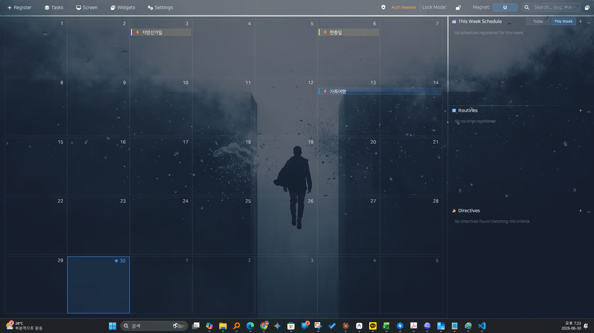

Plan without Google
Use local calendars and tasks without Google account connection or OAuth setup.
LOCAL PLANNING ON WINDOWS
Keep local schedules and tasks visible on your Windows desktop without connecting a Google account. Air Calendar is a paid app with local calendar storage; Google synchronization is an optional step you can skip.
Paid app · Windows 10/11 · Microsoft Store

Use local calendars and tasks without Google account connection or OAuth setup.
See the month and daily work panels together while working at your Windows desktop.
Google Calendar synchronization is optional and requires your own desktop OAuth setup.
Install Air Calendar from Microsoft Store, then use a local calendar for your schedules and tasks. You do not need to connect Google to start planning.
Arrange the monthly calendar and work panels around your screen. Add a clock, D-Day, or countdown widget for time and deadlines.
Local planning does not need Google synchronization. Store purchase and installation, weather updates, online calendar subscriptions, and Google synchronization need internet access. This is not a promise that every feature works offline.